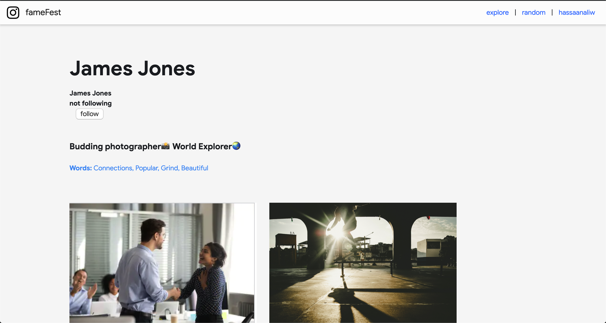
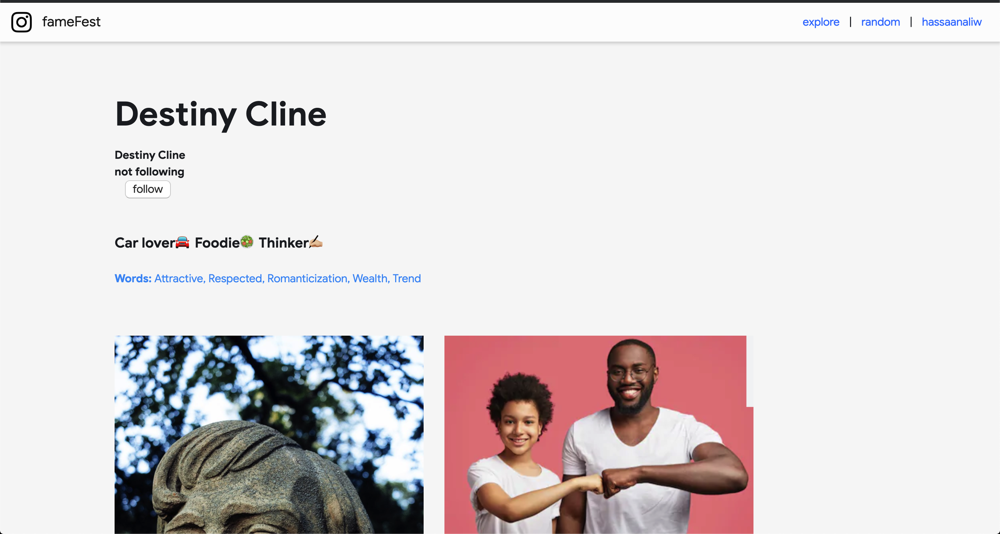

The Newspaper: Fame in The Older Years

Some selected responses used to influence our images:
Very niche (specific types of people only)
talent, humble, caring
Smart, wealthy
rich
Money, success in their field, connections
Primarily white, 'legendary'
Critical success in their area of practice: academics, law, government, theater, acting, music, writing etc. A lot of people probably did not receive the recognition necessary to receive "fame" for reasons of ethnicity or sexual identity or gender.
Popular in the entertainment industry, fashionable, memorable in general? I have never thought about it honestly
classic, conservative, respected
authority, power, talented
Admirable, attractive, rich, white
Fit the america standard of beauty, be able to dance, act or sing, and come from a wealthy family
instaFame: Fame in the Age of Social Media
 
Large following, going viral somehow, can be anyone (diversity)
clout, money, not talent per say
Good looking, bold
rich
Money, success in their field, youth, social media presence
Controversial, grandiose, highly produced, rich
They have a large social media presence or online following based on societal constructs, a lot having to do with wealth.
Social Media presence, popular opinions on social issues, humorous public personality
influential, rich, high-profile, problematic, judged
pretty, talented, cool, badass
Attractive, "woke", fame of partner, rich, smart, brash
Must have a large social media following, introduce a new trend and look very different from the general population.